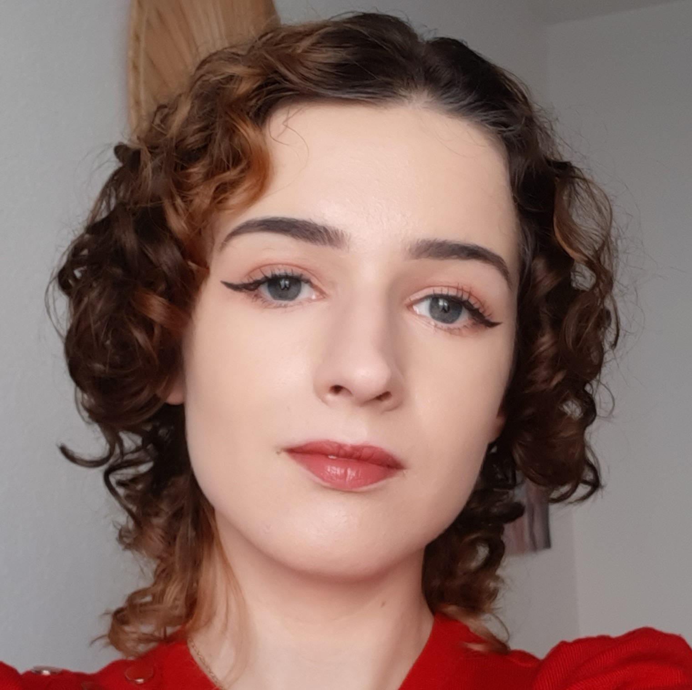

Cloé LAVERNHE
Née le 07/11/2002 à Castres
Diplômée d'un BUT MMI, je suis
à la recherche d'un emploi dans
le community management.
CONTACT
Téléphone : 06 95 74 05 24
Email : cloelavernhe@gmail.com
Adresse : 18 rue Pasteur Henri Bosc,
81100 Castres
QUALITÉS PERSONNELLES
- Sérieuse
- Créative
- Rigoureuse
- Ponctuelle
- Autonome
CENTRES D'INTÉRÊT
- Théâtre (10 ans d'expérience)
- Lecture, écriture
- Montage vidéo
EXPÉRIENCES PROFESSIONNELLES
2023 - 2024 - 2025: Travail saisonnier d'un mois
Travail en salle, responsable de caisse - La Guinguette
des bords d'Agout, Castres
2025 : Stage de trois mois
Community management, création de site web -
Mangalbi café, Albi
2024 : Stage de deux mois
Community management - HYPERMOBILE, Albi
2023 : Stage de trois semaines
Community management - Service communication
de la mairie de Castres
FORMATION
2022 - 2025 : IUT Paul Sabatier
BUT Métiers du Multimédia et de l'Internet
(mention bien)
2020 - 2021 : Université Champollion
Licence de Lettres (première année obtenue)
2017 - 2020 : Lycée de La Borde Basse
BAC L (mention bien)
COMPÉTENCES
- Expression orale et écrite
- Niveau d'anglais C1
- Communication et marketing
- Design graphique
- Montage vidéo
- Développement web
- Travail d'équipe